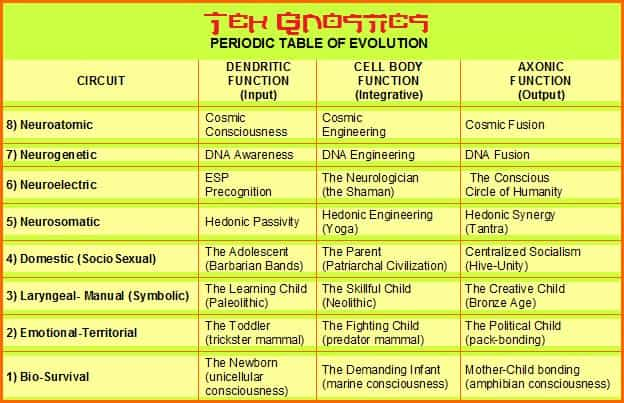
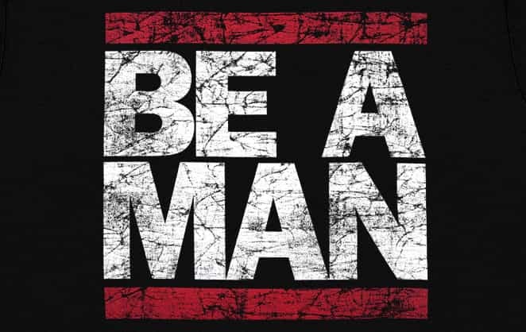

< < < Back
The Psychology That Explains How People Become Liberals – Return Of Kings
I’ve studied numerous psychologists, from Freud to Jung, and from Berne to Maslow, but one of the most interesting psychologists out there is Timothy Leary.
Despite being a Professor at Harvard in the early 1960’s, his seemingly stable position was completely pulled out from underneath him, due to his controversial work involving LSD. At one point, the US government even hated him so much that they gave him 30 years in prison for a minor possession of marijuana, which he claims they planted on him.
Leary, after years of extensive studies, research, and experimentation, developed a framework through which to understand the human mind: the 8 Circuits of Consciousness. The goal of this article is to better understand how leftists think, and what sort of childhood events would lead to such a vehement position on social justice. First, however, I will give a brief analysis of the 8 circuits.
The 8 Circuit Model Of Consciousness

A good introductory book to this theory, as I spoke about here, is Prometheus Rising by Dr. Robert Anton Wilson. Sadly the book is not in print anymore (it’s a hidden gem that not many people know about), but if you don’t feel like buying the kindle version you can check out an hour long YouTube video that I made about the 8 Circuit Model.
In a nutshell, the model claims that human beings have 8 circuits of consciousness, or 8 ways of interpreting external information. When a child is born, he only uses the first circuit. Then, as he gets older, he activates the second. Then, he activates the third, and the fourth.
Most human beings stop here; only a select few have ever activated the latter four. Buddha likely activated the 6th circuit, Jesus the 5th, and Beethoven the 7th.
Due to the complexity of the latter four circuits, I will not discuss them. I will, however focus heavily on the first four, because they have a massive impact in creating a liberal robot. Once a circuit is imprinted, it is extremely difficult to undo. This is why it is so god damn hard to convince liberals of their misguided ways. As I go through this psychological model, and explain why liberals believe what they do, you should start to see just how “robotized” some people really are.
Circuit 1: The Bio-Oral-Survival Circuit
![Baby-breast-feeding[1]](wp-content/uploads/2016/07/Baby-breast-feeding1.jpg)
This is what Carl Sagan would call the Reptilian brain and what Freud would call the oral imprint. This circuit is activated when a child is first born, and is imprinted all the way up until he becomes a toddler. This circuit interprets environmental stimulus in one of two ways: either it’s pleasurable, or painful. Good, or bad. Safe, or unsafe. Typically, the mother plays the integral role in imprinting this circuit.
If this circuit receives ample conditioning that the world is a good place, by receiving enough food, enough love, and enough pleasure, the child will grow up to believe that the world is generally a very safe place.
If this circuit receives ample conditioning that the world is a bad place, by being frequently hungry, not receiving enough love, and experiencing a large amount of pain, the child will grow up to believe that the world is generally a very unsafe place.
Liberals are almost always indefinitely imprinted with a negative world-view. This is why liberals, when they’re adults, tend to the view the world as being an unsafe place. They need “daddy government,” to take care of everything for them, because the world is scary.
They need the strong patriarchy to stop “hurting their feelings,” because the world is too scary for them to handle.
Circuit 2: The Anal-Emotional-Territorial Circuit
![o-EX-TODDLER-facebook[1]](wp-content/uploads/2016/07/o-EX-TODDLER-facebook1.jpg)
This is what Carl Sagan would call the mammalian brain and what Freud would call the anal imprint. This circuit is activated around the time that a child becomes a toddler, and is imprinted all the way up until around age 6 or 7. This circuit interprets relationships with other human beings in one of two ways: am I dominant, or submissive? Am I top-dog or bottom-dog? Am I alpha male, or beta male? Typically, the father plays an integral role in imprinting this circuit.
Have you ever wondered why toddlers are so god damn emotional? It’s because they’re starting to develop their ego—am I dominant (anger) or submissive (fear)? This is why toddlers typically go through a “mine” phase, as well. They’re “claiming their territory,” so to speak.
If a child’s father is a strong, masculine man who is a good role model, the child will model himself after his father and be dominant in most interactions. Not in an obtrusive, egotistical way, but rather he’ll view himself as an alpha male; as the leader.
If a child’s father is very weak and if that child’s mother runs the relationship, this child will inevitably have a “submissive,” imprint in this circuit. He will typically be bullied in grade school, because others can sense his weakness.
Every single leftist has this submissive imprint, which is almost always due to an overbearing mother. Conversely, sometimes it can also be caused by an abusive father; regardless, this is the psychology of a liberal. This is why liberals typically need “top dog” government to help them. They feel the need to be submissive, and rely on someone else to take the lead (in this case the government).
This is why liberals typically dislike masculine men; it points out their own submissiveness and inadequacies. It’s why leftists are typically very spineless and are afraid to stand up for anything that isn’t the norm. This is also why they typically have a “mother-boy” dynamic in their romantic relationships.
Have you ever seen hyper-liberals with their wives? They typically act like a little boy afraid of offending mommy and her feminist ideologies. This is why. They’re conditioned to be submissive from a young age, which allows a nanny state to easily come into play, breaks apart the family unit, and creates a man without a backbone.
Circuit 3: The Neuro-Semantic-Linguistic Circuit
![o-CHILD-READING-facebook[1]](wp-content/uploads/2016/07/o-CHILD-READING-facebook1.jpg)
This is what Carl Sagan would call the “human brain.” Interestingly enough, Freud skips over this one, likely because, like a fish surrounded by water, Freud is so surrounded by his ideology that he can’t even see it.
This circuit is typically imprinted from the ages of 7 to 13, when a child goes through rigorous schooling on how to write, how to read, etc. It’s concerned with creating a map to better understand reality; in other words, it’s your religion, your beliefs, your opinions, and your political ideology. It’s your general world-view put into words. This circuit is not binary (only A or B) like the previous ones; it can have an almost unlimited number of “imprints.”
The catch, however, is that because most people don’t use logic to understand reality, this circuit is typically just an extension of circuits 1 and 2. For example, as I said before, most liberals have a negative first and second circuit imprint: they believe the world is very unsafe, and that they’re bottom-dog/submissive. So, what do you think happens when they start to form a map of reality?
They become a socialist. Now, of course this belief stems from their deeply seeded feelings of inadequacy, fear, and weakness, which is why they want daddy government to take care of them, but they aren’t even aware of this.
Their third circuit will come up with all sorts of justifications and logical fallacies to explain away these gnawing feelings:
- “Oh, but don’t you know? Socialist countries are the happiest in the world!”
- “We need to help the poor! More welfare! It’s because I have empathy, unlike you, cis-scum!”
- “Don’t hurt my feelings! No, you can’t say that! WH-WHAT? No, it isn’t because I’m a weak bitch! It’s because you’re just an asshole!”
- “All men are assholes! That’s why the world is in need of feminism!”
Despite the obvious flaws within these statements, liberals literally cannot even comprehend why they’re wrong. As Roosh said before, it’s because liberals argue from emotion not from reason. In other words, their first and second circuits create the “reality map” that is their third circuit.
Their third circuit basically, then, does nothing but go back and justify their original imprints and emotions. They will selectively seek out information to confirm their biases, and ignore any and all information that contradicts them.
This is why hyper-liberals can claim that men are useless pigs, despite the fact that men are the very ones who are giving them the right to vote, protecting them in war, and paying taxes for their welfare. This is why Leftism is literally a mental disorder.
For the liberal, their third circuit is merely a logical extension and justification of their underlying fear, depression, feelings of inadequacy, and general victim-complex.
Circuit Four: Socio-Sexual Circuit
This is what Freud would call the sexual imprint. It’s much more than that, however—it’s when a child begins to develop deeper connections with those around him. This circuit is responsible for “tribal” information. What is the reality-tunnel that your local tribe, school, church, or community has?
This circuit is how religious beliefs, political beliefs, and other ideologies, are typically passed down from generation to generation. It’s a survival mechanism that ensures we are able to “fit in,” lest we be ostracized and end up starving to death.
This is why liberalism infecting our schools is so god damn insidious. Hyper-liberals take advantage of this critical period, when children are most vulnerable to being imprinted with various ideologies, norms, and sexual practices. It’s why homosexuality is practically the norm now, why transgenderism is on its way, and why pedophilia and zoophilia are next up.
Prior to the internet and media, it was the local high school, the neighbors, and the church that imprinted a child with various cultural beliefs. Now, however, the brainwashing box right in front of our noses has been tearing these strong pillars of culture down.
What a child is exposed to during this time period is of the utmost importance; it will, for the most part, determine his lifelong sexual interests and cultural beliefs. Most Leftists, during this time in their lives, are exposed to homosexuality, transgenderism, and cultural Marxism by their schoolteachers, their peers, and the media. This only exacerbates their previous imprinting (circuits 1-3).
This is why leftists become pan-sexual, or any other weird deviancy. They believe that there’s something fundamentally wrong with them; it goes so deep that it even changes their sexuality.
This is why once leftists grow up, they dye their hair and break social norms. They are so desperate to be bullied (and confirm their first circuit bias that the world is unsafe and their second circuit bias that they’re bottom dog) that they go out of their way to dress up in a bunch of weird shit that they know will get them made fun of.
This is why leftists preach equality and become political activists. They use this to meet other like-minded degenerates and can all hide their feelings of inadequacy and self-hatred by trying to bring others down.
Leftism Is Literally A Disease (How To Create A Leftist)
![maxresdefault[1]](wp-content/uploads/2016/07/maxresdefault1.jpg)
“Feminism is cancer.”
I realize that this is all very complex and nuanced, and can be difficult for a psychology newbie to understand, so I’ll give a brief recap.
During a leftist’s early childhood, his mother likely doesn’t pay enough attention to him. He’s frequently hungry, in pain, and deprived of love. This creates the foundation of leftism; that the world is generally unsafe.
So then, when the leftist becomes a toddler, he is plagued by a chronic fear. This leads others to pick on him, which only further reinforces his first circuit imprint that the world is unsafe, and creates a new imprint: that he’s bottom dog (second circuit binary imprint).
These two imprints create what is known as a victim complex. Victims typically view the world as being very unsafe, and they view themselves as being very weak, and not capable of protecting themselves from the perils that surround them. Does this not sound exactly like a liberal?
Then, when the liberal hits the age of cognition, when his neo-cortex starts to develop further, he enters into the third circuit imprinting period. Here he forms a number of beliefs that merely serve to justify his prior imprinting, such as:
- The world is a very dangerous place!
- I need others to help me!
- I don’t have to step up to the plate; someone else will deal with the challenge or problem at hand.
- Most people are evil!
From here, they start to enter the fourth circuit, primed and ready to fully accept liberal social principles. They often times take on a “deviant” sexual imprint, or they hate themselves so much that they can’t even bear their own gender, so their fourth circuit effectively becomes an extension of their first two circuits.
From here, they go out into the world and get involved in social media and political activism, by grouping up with other like-minded individuals. This surrounding of themselves by liberals only enforces their fourth circuit imprinting that homosexuality, transgenderism, pansexualism, and whatever-the-fuck-else-ism is normal.
So What’s The Cure?

It is extremely difficult to undo a liberal’s imprinting without using unethical methods (LSD re-imprinting, brainwashing them, controlling their food and water supply to revert them to a childlike state, etc.). And even if these things weren’t unethical, we don’t have the resources to do them.
So, what I propose, is that we simply become aware of this phenomena and work to stop it. I know this sounds so cliche, and I’ve said it a million times, but we NEED TO start creating more masculine men in the world. And it starts with our youth. It starts with you and me.
Take a martial art, work out, and get your finances in check. Slowly we will start to undo the monstrosity that is modern liberalism. The most important thing, however, is that we take action.
Don’t put up with your girlfriend treating you like shit. Instead, learn how to actually get girls, so that you aren’t afraid to leave her. Don’t accept bitchy excuses. Be a fucking man and do what you need to do to get what you want to have.
 If you like this article and are concerned about the future of the Western world, check out Roosh's book Free Speech Isn't Free. It gives an inside look to how the globalist establishment is attempting to marginalize masculine men with a leftist agenda that promotes censorship, feminism, and sterility. It also shares key knowledge and tools that you can use to defend yourself against social justice attacks. Click here to learn more about the book. Your support will help maintain our operation.
If you like this article and are concerned about the future of the Western world, check out Roosh's book Free Speech Isn't Free. It gives an inside look to how the globalist establishment is attempting to marginalize masculine men with a leftist agenda that promotes censorship, feminism, and sterility. It also shares key knowledge and tools that you can use to defend yourself against social justice attacks. Click here to learn more about the book. Your support will help maintain our operation.
Read More: Analyzing The 5 Main Alpha Archetypes